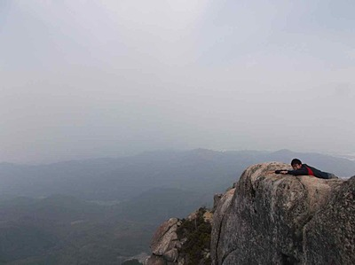

Members
柏嶋 始
- 今までしてきたこと
- 将棋
- これからしてみたいこと
- 青春……いや、そんなに興味がないような気もする。
- 山について
- ごみごみしてなくて、気持ちいいですよね。
- 大学での目標
- タフになりたいな。
- ひとこと
- 超インドア派です。
川原 光滋
- 好きな山行スタイル
- 藪こぎ。または岩場。
- 悩み
- 試験期間中の山禁断症状。
- 入部しての衝撃
- テントをあえて使わない、沢の生水を平気で飲む。
- 一言
- 山に行くと体力が減って精神力が回復する。

鈴木 拓馬
- 趣味
- ボードゲーム
- 好きな漫画
- 老年期の終り
- 登ってみたい山
- 宮之浦岳 ワイナ・ピチュ
- 将来の夢
- ヒトより賢いコンピュータを作る
- ひとこと
- 怖いもの=饅頭
長根 乃愛
- 趣味
- 美術館や展覧会に行くこと
- 行ってみたいところ
- 北アルプスとかたくさん
- 最近感動した瞬間
- 幻沢から幻湿原の雪原に出たとき
- 気になる絵師
- 長谷川等伯、伊藤若冲
- 目標
- 体力をつける

新留 一輝
- 趣味
- ゲッツという芸人の渾身のギャグを見ること
- 好きな言葉
- クオリティー・オブ・ライフ
- 好きな食べ物
- チーズのたくさん入った食べ物
- 好きな山
- 岩岩した山
- 自慢したいこと
- 沖縄に一年間だけ住んでいた
- 今年の目標
- 冬山をやる体力とお金をてにいれること
留年を全力で回避すること
西川 遣治
- 趣味
- ブックオフで立ち読み
- やってみたいこと
- 大学近くで一人暮らしして、毎日8時過ぎまでぐっすり眠る
- 好きな漫画のジャンル
- 四コマ漫画
- 座右の銘
- 学而不思則罔、思而不学則殆
- 好きな数学者
- ラマヌジャン
野原 啓佑
- 好きな飲み物
- ドクターペッパー
- 至福の時
- 音楽を聴きながらただぼーっとしている
- 行ってみたいところ
- 小笠原諸島
- ワンゲルでの悩み
- 理系の同級生の話に加われないこと
- 今後の目標
- 見た目の若返りを図る
- ひとこと
- クズ道も極めれば王道なり
深山 莉綾
- 好きなもの
- 山とみかん
- 好きな本
- 天の瞳(灰谷健次郎)
- 好きな山行
- 沢
- 沢でうっかり流してきたもの
- 女子力
- ４月の沢で手に入れたもの
- 耐寒力
- いつかやりたいこと
- スイスでサイクリング
- 欲しいもの
- 身長。
- ひとこと
- 司法試験…
村田 健吉
- 行ってみたいところ
- 南極大陸、日本の離島
- 今年の目標
- 高速林道歩きに対応できる体力をつける
- 大学での目標
- 学生という身分を最大限生かす
- 趣味
- 日本泳法
- 好きな山行
- 景色のいい限界上の縦走、雨の樹林帯
- ひとこと
- 夢でエベレスト登ったことあります
八嶋 晋吾
- 趣味
- 18きっぷで旅行、野球観戦
- やってみたいこと
- (晴れた日に)オカン
- 好きな駅
- 小淵沢駅
- 欲しいもの
- 山行中にテンションを上げる余裕
- 天敵
- 蚊
- ひとこと
- 几帳面になりたい
